2026 / 2027
التحولات الاقتصادية والمالية والاجتماعية والفكرية في العالم الرأسمالي خلال القرن 19م
الدرس الثاني · التاريخشكّلت أوروبا الغربية مهد النظام الرأسمالي الذي انتقل لاحقًا إلى الولايات المتحدة الأمريكية واليابان. وقد عرف العالم الرأسمالي خلال القرن 19م تحولاتٍ اقتصادية عميقة مسّت القطاعات كلها (الصناعة والفلاحة والتجارة والمال) بفعل التقدم العلمي والتقني والتنظيمي وثورة المواصلات، فتطوّر النظام من رأسمالية صناعية إلى رأسمالية مالية. ورافق ذلك نموٌّ ديموغرافي وحضري سريع، وبروز طبقتين متناقضتين (البرجوازية والبروليتاريا)، مهّد لظهور الفكر الاشتراكي والحركة النقابية.
ما مظاهر التحولات الاقتصادية والمالية التي عرفها العالم الرأسمالي خلال القرن 19م؟ وما العوامل المفسّرة لها؟ وما أبرز انعكاساتها الاجتماعية والفكرية؟
مقدمة:
شكلت أوروبا الغربية مهد النظام الرأسمالي الذي انتقل إلى الولايات المتحدة الأمريكية واليابان.
- ما هي التحولات الاقتصادية والمالية بالعالم الرأسمالي والعوامل المعززة للرأسمالية خلال القرن 19م؟
توالت خلال القرن 19م ومطلعِ القرن 20م ثوراتٌ صناعية طوّرت مصادر الطاقة والصناعات بشكل تدريجي، وهي الأساس المادي للتحولات الاقتصادية:
| الثورة الصناعية | الإطار الزمني | مصادر الطاقة | أبرز الصناعات والاختراعات |
|---|---|---|---|
| الأولى | منتصف ق18 – منتصف ق19م | الفحم الحجري والآلة البخارية | النسيج القطني، صناعة الحديد، السكك الحديدية (قاطرة ستيفنسن 1825م). |
| الثانية | 1870 – 1914م | الكهرباء والبترول | الفولاذ (تقنية بيسمر)، الصناعات الكيماوية، السيارات، التلغراف والهاتف. |
| الثالثة | خلال القرن 20م | الطاقة النووية والإلكترونيك | الصناعات الدقيقة والإلكترونية والمعلوماتية (امتدادٌ لاحق للمسار الصناعي). |
ركّز مقرر السنة على القرن 19م (الثورتان الأولى والثانية)؛ أما الثالثة فذكرها للتأطير فقط لأنها من القرن 20م.
- توالي ثلاث ثورات صناعية طوّرت قطاع الطاقة (الفحم، الكهرباء، النفط).
- تطور الصناعات الاستهلاكية (النسيج، السيارات) ثم التجهيزية (الفولاذ، الميكانيك، الكيمياء).
- تزايد إنتاج الطاقة والمعادن وارتفاع مساهمة الصناعة في الناتج الداخلي الخام.
- ظهور مراكز صناعية ومدن كبرى قرب المناجم والموانئ ومصادر الطاقة (منشستر نموذجًا).
- تدبير المياه وتطوير تقنيات الري (السدود والقنوات).
- استعمال الأسمدة الكيماوية واعتماد المكننة.
- تقنيات جديدة (التهجين، قوانين ماندل) واعتماد الدورة الزراعية بدل استراحة الأرض.
- بروز فلاحة تسويقية رأسمالية مرتبطة بالسوق والصناعة.
- اعتماد نظام التبادل الحر وانتعاش التجارة البعيدة المدى.
- علاقات نفعية بين البلدان الرأسمالية (الأطراف تخدم المركز).
- ظهور متاجر كبرى عصرية على مستوى التجارة الداخلية.
- أساليب جديدة: الأسعار المحددة، الماركات المسجّلة، الإشهار.
- تحوّل وظيفة الأبناك من الادّخار إلى الاستثمار وتمويل الصناعة.
- انتشار الشركات المجهولة الاسم التي يسّرت الاستثمار وخفّفت مخاطره.
- تزايد أهمية البورصات في تعبئة الرساميل.
- تحوّل تدريجي من الرأسمالية الصناعية إلى الرأسمالية المالية.
I. مظاهر وعوامل التحول الاقتصادية المعززة للرأسمالية
1- مظاهر التحول الاقتصادي
أ- في المجال الصناعي: تطور الإنتاج الصناعي
- عرف القرن 19م ثلاث ثورات صناعية طورت بشكل تدريجي قطاع الطاقة (الفحم - الكهرباء - النفط) وقطاع الصناعات الاستهلاكية (النسيج، السيارات) ثم قطاع الصناعات التجهيزية (الصناعات الميكانيكية، صناعات الفولاذ والصناعات الكيماوية).
- سجل القرن 19م تزايدا واضحا في إنتاج الطاقة والمعادن مما طور الصناعة.
- ازدياد مساهمة الدول الأوروبية في الإنتاج الصناعي العالمي وازدياد مساهمة الصناعة في الناتج الداخلي الخام للدول الرأسمالية.
- ظهرت بأوروبا مراكز صناعية ومدن كبرى بالقرب من المناجم والموانئ ومصادر الطاقة (مدينة منشستر).
- تنظيم عملية الإنتاج داخل الوحدة الصناعية.
ب- في المجال الفلاحي
حصل تطور هام بالمجال الفلاحي بفعل:
- تدبير المياه وتطوير تقنيات الري (السدود، القنوات).
- استعمال الأسمدة الكيماوية.
- اعتماد المكننة.
- استعمال تقنيات فلاحية جديدة (التهجين، قوانين ماندل).
- التخلي عن نظام استراحة الأرض في مقابل الدورة الزراعية.
- صارت الفلاحة تسويقية.
- اعتماد التنظيم الرأسمالي في الفلاحة والارتباط بالسوق والصناعة.
ج- في المجال التجاري
- حدوث رواج تجاري مهم للتجارة الخارجية.
- اعتماد نظام التبادل الحر.
- أصبحت العلاقات بين البلدان الرأسمالية نفعية أي الأطراف تخدم المركز.
- ظهور متاجر كبرى عصرية.
- حدوث رواج كبير للتجارة الداخلية.
- اعتمدت المبادلات التجارية طرقا وأساليب عصرية جديدة كالأسعار المحددة والماركات المسجلة والإشهار.
- تطور التجارة البعيدة المدى.
د- في المجال المالي
زادت أهمية الأبناك وتحولت وظيفتها من الادخار إلى الاستثمار وظهرت شركات الأسهم المجهولة الاسم فسهلت الاستثمار وزاد تأثير البورصات وشركات التملك الهولدينغ فتحولت الرأسمالية تدريجيا من رأسمالية صناعية إلى رأسمالية مالية.
- تطور العلوم، خصوصًا الكيمياء، واعتماد رجال الصناعة على الكيميائيين في مصانعهم.
- ظهور تقنيات جديدة: التهجين في الفلاحة، وتقنية بيسمر في صناعة الفولاذ.
- اختراعات محورية: آلة الخياطة، الآلة الحاصدة، الدينامو، قاطرة ستيفنسن.
- اعتماد النهج الليبرالي وقانون العرض والطلب ومنطق المنافسة.
- ظاهرة التركيز الرأسمالي بأشكالها (الأفقي، العمودي، الهولدينغ).
- حلول المصنع العصري محل المانيفكتورة، والضيعة الرأسمالية والمتاجر الكبرى محل الأشكال التقليدية.
- تطور السكك الحديدية وفكّ العزلة عن البوادي (أول خط سنة 1825م، وبلغت الخطوط ~100 ألف كلم أواخر القرن).
- قفزة في النقل البحري بفضل المحرك البخاري وتضاعف شركات النقل.
- حفر القنوات البحرية (السويس 1869م وبنما) واختراع التلغراف.
- الشركات المجهولة الاسم: القلب النابض للرأسمالية.
- المقاولات العائلية الكبرى التي أنشأت مصانع عملاقة (مثل «كروزو»).
- الأبناك التي غيّرت وظيفتها وصارت تموّل القطاع الصناعي.
2- تفسير التحولات الاقتصادية المعززة للرأسمالية خلال القرن 19م
تضافرت عدة عوامل في تشكيل التحولات التي عرفها النظام الرأسمالي ويمكن أن نجملها فيما يلي:
- دور التقدم العلمي والتقني:
- شهد القرن 19م تطورا علميا وتقنيا أثر مباشرة في عمليات الإنتاج والنقل والتسويق معززا بذلك النظام الرأسمالي ومن أمثلة ذلك:
- تطور علم الكيمياء، حيث صار يدرس في المدارس العمومية كما اعتمد رجال الصناعة على الكيميائيين وشغلوهم في مصانعهم.
- على المستوى التقني، ظهرت تقنيات جديدة في الفلاحة (التهجين) والصناعة (تقنية بيسمر في صناعة الفولاذ).
- ظهرت من جانب آخر اختراعات مهمة طورت القطاعات الاقتصادية (آلة الخياطة - الآلة الحاصدة - قاطرة ستيفنسن...).
- انتشر استعمال الآلة البخارية بالدول الصناعية.
- دور العامل التنظيمي:
- خلال القرن 19م، تعززت روح النهج الاقتصادي الليبرالي من خلال تفعيل قانون العرض والطلب ومنطق المنافسة وما أسفر عن ذلك من تجديد متواصل للتقنيات والأساليب التنظيمية.
- حل المصنع العصري محل المانفكتورات (نظام المشاغل).
- حلت الضيعة الرأسمالية محل الاستغلاليات الفلاحية التقليدية.
- حلت المتاجر العصرية الكبرى محل الدكاكين الصغرى.
- ويبقى العامل الحاسم تنظيميا هو ظهور ظاهرة التركيز الرأسمالي بمختلف أشكالها (عمودي - أفقي - هولدينغ) التي خلقت مؤسسات احتكارية كبرى طورت بشكل حاسم النظام الرأسمالي.
- دور ثورة المواصلات:
- لعبت السكك الحديدية دورا هاما في تقريب المسافة وفك العزلة عن البوادي (أول خط سنة 1825م ووصلت الخطوط إلى 100 ألف كيلومتر عبر العالم مع نهاية القرن 19).
- عرف النقل الملاحي قفزة نوعية بفعل تطور المحركات البخارية فتضاعفت الشركات المشتغلة في النقل البحري... فتعززت بذلك التجارة بعيدة المدى عبر أرجاء العالم الرأسمالي.
- كما تم حفر قنوات بحرية اختصرت المسافات مثل قناة السويس وقناة بنما...
- دور الفاعلين الجدد في تنشيط الرأسمالية خلال القرن 19م:
- أصبحت الشركات المجهولة الاسم القلب النابض للرأسمالية بفعل تنظيم الاستثمار والتخفيف من أخطاره بفعل تقاسم الأسهم.
- ساهمت المقاولات العائلية الكبرى في خلق مصانع عملاقة «كروزو» وكان أصحابها يتحكمون في عالم الاقتصاد والسياسة على حد سواء مثل عائلة شنايدر وروكفلر.
- صارت الأبناك من خلال رصيدها تشارك في تمويل القطاع الصناعي بل وتحولت تدريجيا إلى مؤسسات رأسمالية صناعية محولة معها الرأسمالية الصناعية إلى رأسمالية مالية.
أسهمت اختراعات وتقنيات متتالية في تعزيز الإنتاج والنقل والتسويق:
| الاختراع / التقنية | المجال | الأثر |
|---|---|---|
| الآلة البخارية (تطويرها) | الطاقة والصناعة | مصدر طاقة محرّك للمصانع ووسائل النقل. |
| قاطرة ستيفنسن (1825م) | المواصلات | انطلاق السكك الحديدية وفكّ العزلة وتنشيط التجارة. |
| تقنية بيسمر | صناعة الفولاذ | إنتاج الفولاذ بكلفة أقل وجودة أعلى فتطورت الصناعة الثقيلة. |
| الدينامو | الكهرباء | توليد التيار الكهربائي مصدرَ طاقة جديدًا للصناعة. |
| آلة الخياطة والآلة الحاصدة | النسيج والفلاحة | مكننة الإنتاج ورفع الإنتاجية. |
| التلغراف | الاتصال | تسريع تبادل المعلومات التجارية والمالية عبر المسافات. |
مرّ النظام الرأسمالي بثلاث مراحل متتالية: الرأسمالية التجارية، ثم الرأسمالية الصناعية، ثم الرأسمالية المالية. وقد تحقّق الانتقال إلى المرحلة الأخيرة بفضل تأطير الشركات المجهولة الاسم والبورصات والأبناك التي صارت تموّل الصناعة وتوجّهها، وهو ما مهّد لاحقًا للحركة الإمبريالية بحثًا عن مجالات جديدة لتوظيف الرساميل.
شهدت سنة 1873م أزمةً حقيقية للنظام الرأسمالي بسبب فائض الإنتاج، فامتدّت إلى القطاعين الفلاحي والصناعي، وعجّلت بعودة أوروبا إلى سياسة الحمائية (مثال: انهيار بنك الاتحاد العام بفرنسا).
3- تطور النظام الرأسمالي باتجاه الرأسمالية المالية
بعد المرور من مرحلة الرأسمالية التجارية ثم الرأسمالية الصناعية تحولت الدول الصناعية نحو مرحلة الرأسمالية المالية وجاء ذلك بفعل تأثير الشركات المجهولة الاسم والبورصات والأبناك فمهد ذلك للحركة الإمبريالية (انظر الوثيقة 1 ص 20).
شهدت سنة 1873م أزمة حقيقية للنظام الرأسمالي حيث شهد قطاع الصناعة فائضا في الإنتاج ثم انتقلت الأزمة إلى القطاعين الفلاحي والصناعي مما عجل في عودة أوروبا إلى الحمائية (مثال انهيار بنك الاتحاد العام بفرنسا): «أكثر عدوانية - فائض في الإنتاج - الإمبريالية».
- تضاعف عدد السكان لانخفاض الوفيات (تحسن التغذية والطب والتلقيح) وارتفاع الولادات.
- نمو حضري سريع بفعل الهجرة القروية الناتجة عن الثورة الصناعية وضعف الدخل الفلاحي.
- تزايد نفوذ البورجوازية (أصحاب الشركات والتجار الكبار) وسيطرتها على الاقتصاد والسياسة.
- تراجع مكانة النبلاء وتحوّل بعضهم إلى بورجوازيين.
- تكاثر الطبقة العاملة (البروليتاريا) ومعاناتها من ظروف قاسية (ضعف الأجور، طول العمل، السكن غير اللائق، استغلال الأطفال والنساء).
II. رصد وتفسير التحولات الاجتماعية بالعالم الرأسمالي خلال القرن 19م
1- التحولات الديمغرافية
شهد العالم الرأسمالي تحولات ديموغرافية مهمة من أبرزها:
- انفجار ديمغرافي: تضاعف عدد السكان بفعل انخفاض نسبة الوفيات أمام تحسن التغذية وتقدم الطب، مقابل ارتفاع نسبة الولادات.
- انفجار حضري: نمو حضري سريع أمام انتشار الهجرة القروية. تزايد الهجرة القروية لعدة أسباب منها الثورة الصناعية والتوسع الرأسمالي وضعف الدخل الفلاحي وزيادة جاذبية المدن وتوفرها على فرص الشغل وتراجع الطلب على اليد العاملة بالبوادي وانتشار ظاهرة التسييج واندثار العادات والتقاليد الجماعية دون أن ننسى دور المكننة في الفلاحة...
- هجرة خارجية: بفعل الانفجار الديمغرافي زادت الهجرة الخارجية خصوصا نحو العالم الجديد والمستعمرات...
2- التحولات البنيوية
- تغيرت البنية الاجتماعية في البلدان الرأسمالية.
- تزايد نفوذ البورجوازية التي سيطرت على الأنشطة الصناعية والتجارية والخدماتية والفلاحة العصرية. في حين تراجعت مكانة طبقة النبلاء، وأدت حركة التصنيع إلى تكاثر اليد العاملة التي عانت من ظروف معيشية قاسية منها ضعف الأجور وطول مدة العمل اليومي والسكن غير اللائق وانتشار الأمراض وسوء التغذية واستغلال الأطفال والنساء...
- انتقدت الرأسمالية ونادت بسيطرة الدولة على وسائل الإنتاج (سان سيمون، روبرت أوين).
- تولّدت عنها الاشتراكية الفوضوية (برودون).
- اعتبرت الصراع الطبقي أساس التطور التاريخي.
- دعت إلى العنف الثوري لإقامة النظام الاشتراكي (كارل ماركس).
- تأسيس نقابات قوية (إنجلترا، فرنسا، ألمانيا) تكتّلت عالميًا في الأممية الأولى والثانية.
- تحقيق مكتسبات: تقليص ساعات العمل، الزيادة في الأجور، التعويضات، حق الإضراب، والعطل المؤدّى عنها.
3- التحولات الفكرية: نتيجة التحولات الاجتماعية
1. بروز الفكر الاشتراكي بأوروبا خلال القرن 19م
- إذا كانت الليبرالية الكلاسيكية بقيادة آدم سميث مثلت مصالح البورجوازية، فإن الفكر الاشتراكي دافع عن العمال بانتقاده الاستغلال الطبقي والبؤس الاجتماعي المواكبين للثورة الصناعية.
- صنفت الاشتراكية إلى نوعين هما:
- الاشتراكية الطوباوية (الخيالية أو المثالية): التي انتقدت مبادئ الرأسمالية ونادت بسيطرة الدولة على وسائل الإنتاج وإقامة تجمعات إنتاجية وجعل التسيير في يد النخبة وتزعمها بعض المفكرين منهم الفرنسي سان سيمون والإنجليزي روبرت أووين. وتولدت عنها الاشتراكية الفوضوية التي دعت إلى إلغاء الدولة بقيادة الفرنسي برودون.
- الاشتراكية العلمية: التي اعتبرت الصراع الطبقي أساس التطور التاريخي ودعت إلى العنف الثوري (الإضرابات والمظاهرات) من أجل القضاء على الرأسمالية وإقامة النظام الاشتراكي، ومن أهم زعماء هذا الاتجاه المفكر الألماني كارل ماركس وفريدريك إنجلز.
2. نشأة وتطور الحركة النقابية في البلدان الرأسمالية
- في النصف الأول من القرن 19م، شكل العمال في بعض بلدان أوروبا الغربية عدة جمعيات من أجل الدفاع عن حقوقهم وفي النصف الثاني من نفس القرن تأسست نقابات عمالية قوية في كل من إنجلترا وفرنسا وألمانيا وتكتلت هذه النقابات عالميا في إطار الأممية الأولى والثانية (الاتحاد العالمي للنقابات).
- أسفر نضال العمال عن تحقيق عدة مكتسبات من أبرزها: تقليص ساعات العمل اليومي والزيادة في الأجور وإحداث تعويضات المرض وحوادث الشغل والبطالة والتقاعد وحق الإضراب والاستفادة من العطل المؤدى عنها والاحتفال بعيد الشغل في فاتح ماي من كل سنة.
مفاتيح توظّف في التحليل والإنشاء التاريخي:
انطلاقًا من معطيات الدرس، حرّر فقرة (6–8 أسطر) تبيّن فيها دور التقدم العلمي والتقني وثورة المواصلات في تعزيز النظام الرأسمالي خلال القرن 19م، موظّفًا ثلاثة مفاهيم على الأقل من مفاهيم الدرس.
لوحتان تلخّصان الدرس بصريًا، مستخرَجتان من كتيب الدروس والتمارين للأستاذ أحمد بوعمود:


موارد مكمّلة تفتح من درايف الأستاذ (فيديو، عروض، صور)؛ تدعم الفهم والمراجعة:
بطاقات الأستاذ المصوّرة تلخّص الدرس من الثورة الصناعية إلى الحركة النقابية؛ تصلح للمراجعة السريعة قبل الفرض:
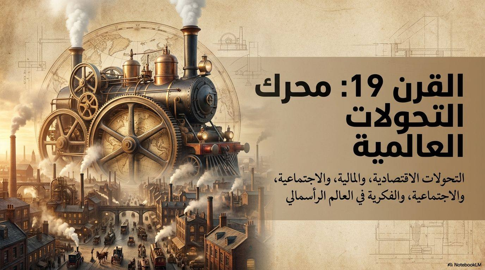

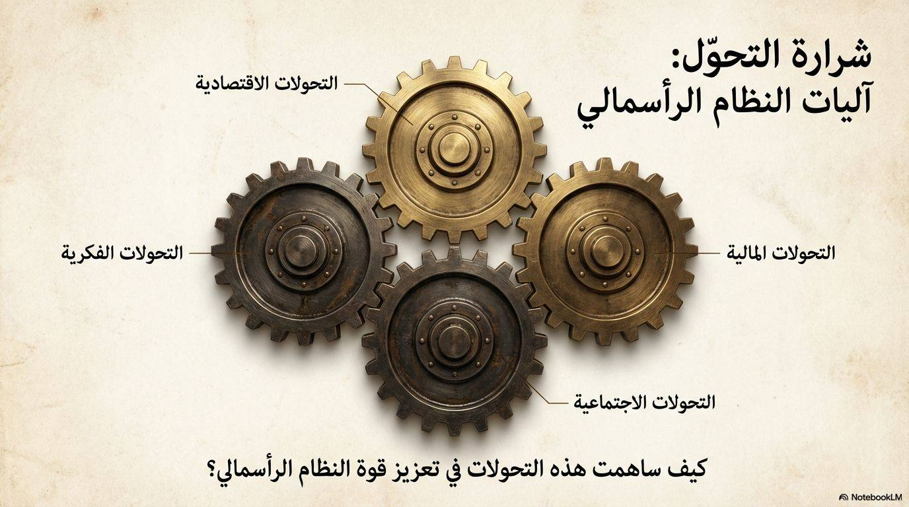

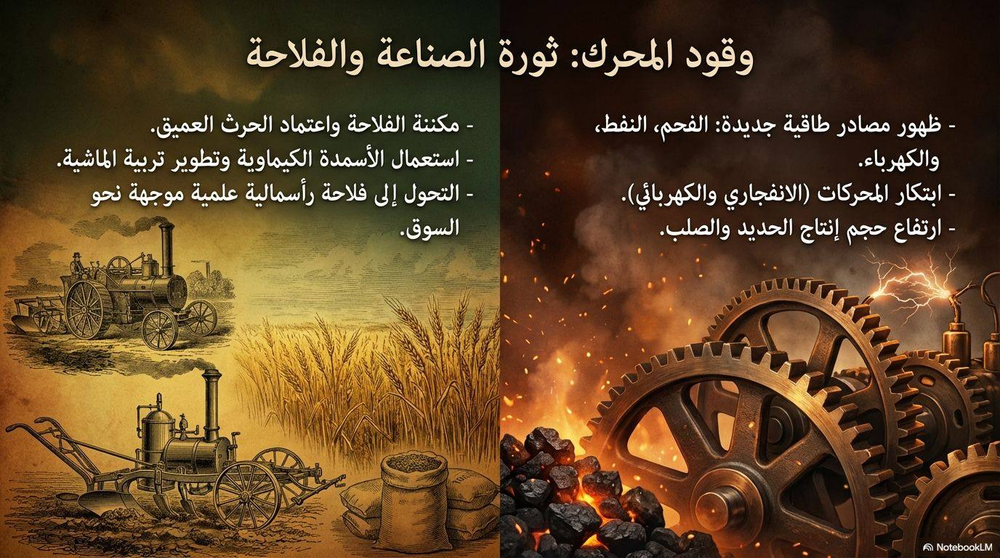

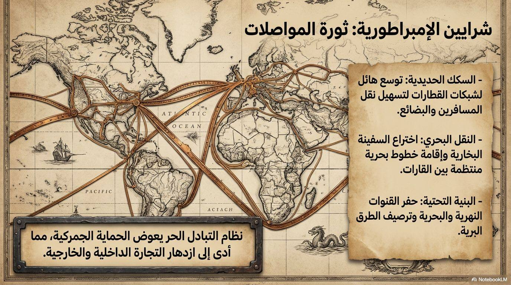

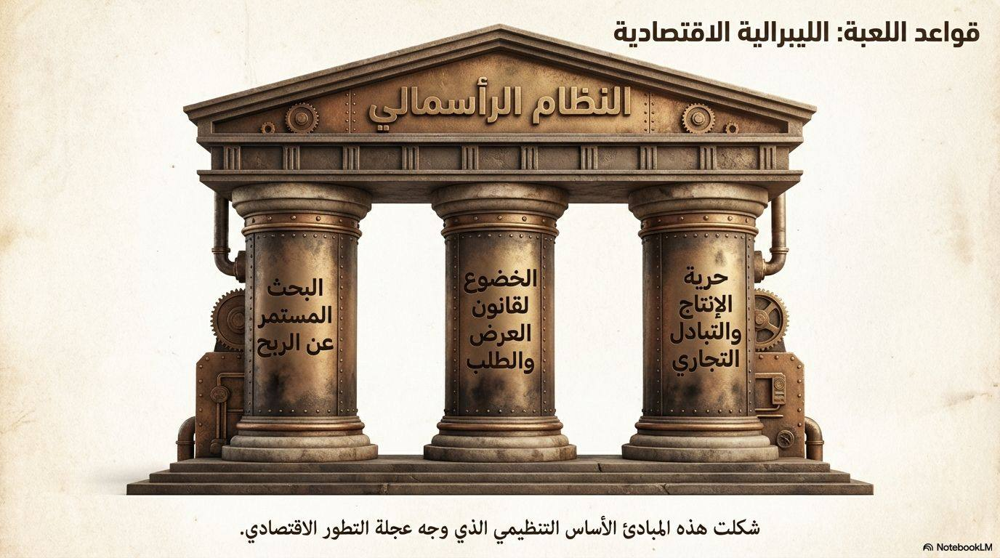

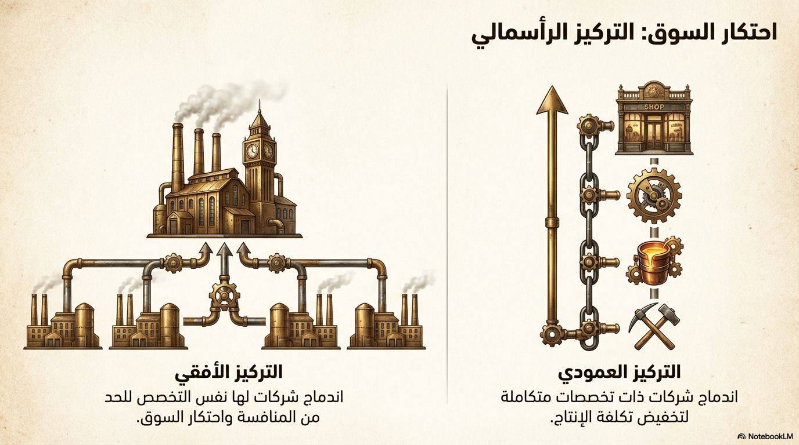


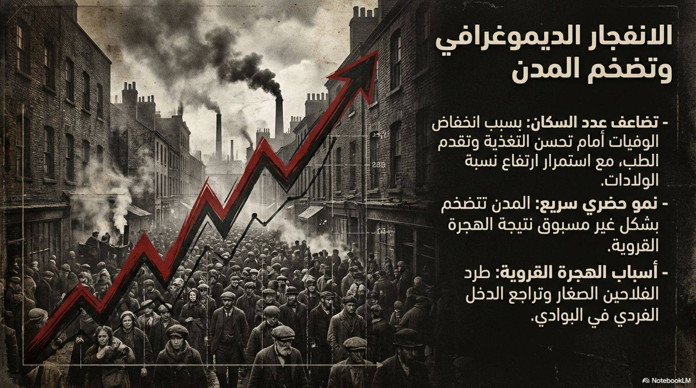

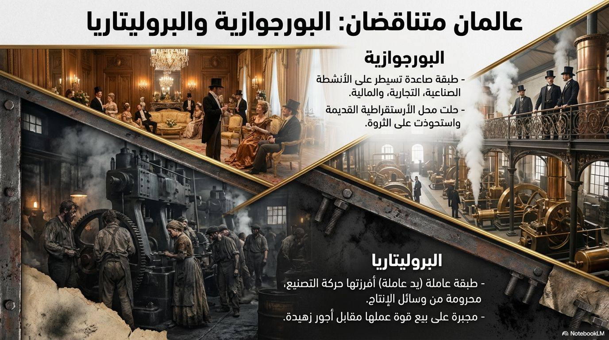

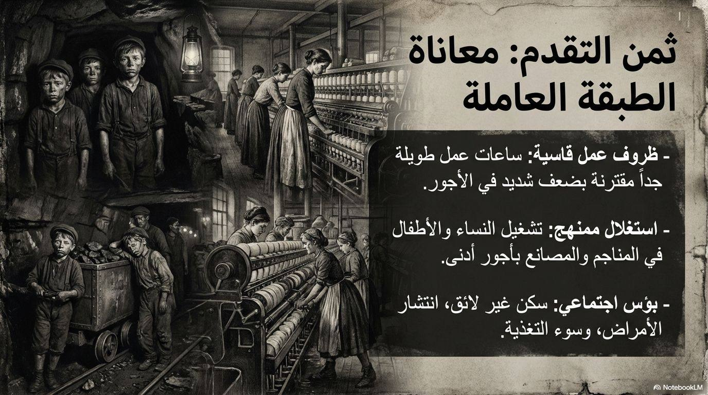


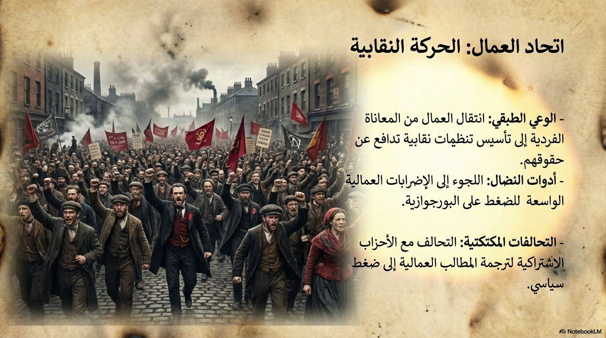


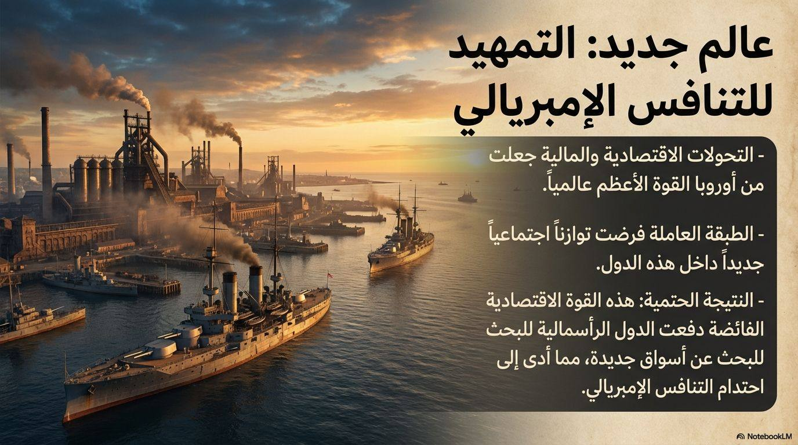

أدّت التحولات الاقتصادية والمالية والاجتماعية والفكرية التي عرفها العالم الرأسمالي خلال القرن 19م إلى تدعيم مكانة أوروبا عالميًا وترسيخ الرأسمالية المالية، وأسهمت في احتدام التنافس الإمبريالي بين الدول الأكثر قوة واتساعًا بحثًا عن المواد الأولية والأسواق ومجالات توظيف الرساميل، وهو ما سيقود لاحقًا إلى اندلاع الحرب العالمية الأولى.
خاتمة:
أدت هذه التحولات إلى تدعيم مكانة أوروبا عالميا واحتدام التنافس الإمبريالي بين دولها الأكثر قوة.